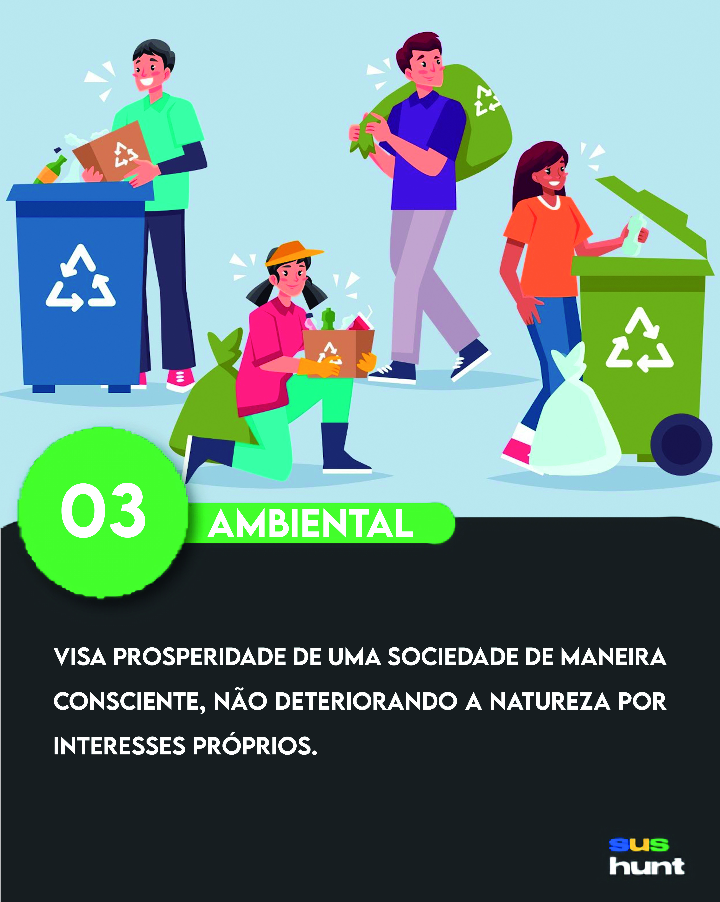

Sustentabilidade Ambiental
Parabens por chegar até aqui! Você acaba de concluir um terço da caçada e está mais perto da vitória, mas ainda tem caminho para ser percorrido. Aqui, além de darmos uma cartinha colecionável, a qual você precisa pra concluir o jogo, também vamos te dar uma das três partes da dica que te levará para linha de chegada.
{kind=link}
Mas antes disso, aqui vai uma curiosidade sobre a sustentabilidade ambiental:
Ela não é apenas sobre economizar água e evitar queimadas, metodologias que visam a economia de recursos e o uso prático deles, como a moda sustentável, a construção criativa e o designe urbano, são ótimos exemplos de como contribuir para a saúde do meio ambiente.
Agora que você já entende um pouco sobre a sustentabilidade ambiental, chegou a hora de continuar o nosso jogo. o trecho a seguir será a primeira parte da dica que vai te levar a vitória. “Aqui nos vamos colocar a primeira parte da dica final que vai levar para onde vamos distribuir os prêmios ”. Mas lembre-se você ainda precisa encontrar as duas cartas restantes que representam os outros dois pilares da sustentabilidade, são elas que te darão as outras partes da dica que leva a linha de chegada.